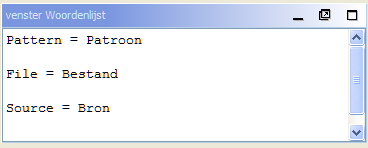
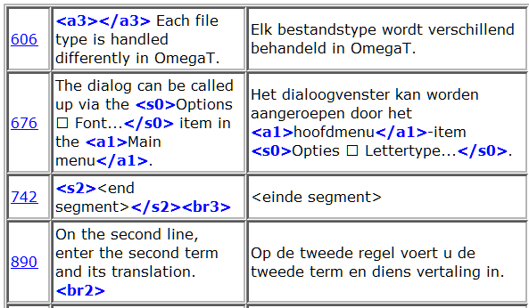

|
|
|
|
U kunt de onderstaande dialoogvensters gebruiken om OmegaT en de projectinstellingen te wijzigen. Deze worden allemaal beschreven in afzonderlijke secties, hieronder vatten we slechts samen waar zij voor kunnen worden gebruikt en hoe u ze op kunt roepen:
|
|
|
|
|
|
|
|
|
|
Het hoofdvenster bestaat uit drie vensters, het hoofdmenu en een statusbalk. U kunt de positie van elk venster wijzigen of het zelfs losmaken en er een zelfstandig venster van maken door het venster te slepen aan zijn naam. Afhankelijk van de status van het venster kunnen 5 verschillende tekens verschijnen in de rechterbovenhoek ervan.
 verkleint het venster zodat alleen de naam wordt getoond vlak boven de statusbalk.
verkleint het venster zodat alleen de naam wordt getoond vlak boven de statusbalk.
 laat het venster alle beschikbare vensterruimte innemen.
laat het venster alle beschikbare vensterruimte innemen.
 herstelt het venster tot wat het was vóórdat het werd geminimaliseerd of gemaximaliseerd.
herstelt het venster tot wat het was vóórdat het werd geminimaliseerd of gemaximaliseerd.
 maakt het venster los van het hoofdvenster tot een zelfstandig venster.
maakt het venster los van het hoofdvenster tot een zelfstandig venster.
 zet het venster weer vast in het hoofdvenster.
zet het venster weer vast in het hoofdvenster.
Het is ook mogelijk de vensters dusdanig te plaatsen dat zij elkaar overlappen. In dat geval zullen de vensters aan de bovenzijde een tab weergeven. Klikken op de tab zal het venster naar de voorgrond brengen. De scheidingen tussen de vensters kunnen worden gesleept om de afmetingen van vensters te wijzigen.
Hier typt en bewerkt u de vertaling. Het venster Bewerken geeft de tekst van het gedeeltelijk vertaalde document weer: de tekst die al vertaald is wordt vertaald weergegeven en de tekst die nog niet vertaald is wordt weergegeven in de originele taal. De weergegeven tekst is gesplitst in segmenten en u kunt door het document scrollen en op een willekeurig segment dubbelklikken om het te bewerken. In het bovenstaande geval worden de reeds vertaalde segmenten weergegeven in geel, maar u kunt de instelling wijzigen om aan uw voorkeuren te voldoen (zie menu Weergave).
Eén van de segmenten is het actieve segment. Het is het enige dat is weergegeven in twee delen: het bovenste gedeelte is weergegeven in de originele taal, in vette tekens met een groene achtergrondkleur, het onderste gedeelte is het bewerkingsveld, gescheiden door twee markeringen: de linker markering is <segment nnnn> waar nnnn staat voor het nummer van het segment in het project, de rechter markering is <einde segment>. U gebruikt het bovenste gedeelte als een verwijzing en de inhoud van het bewerkingsveld overschrijven of bewerken met uw vertaling.
Afhankelijk van het bewerkingsgedrag kan het bewerkingsveld voor het niet-vertaalde segment leeg zijn, de brontekst bevatten of de vertaling van de tekenreeks die het meeste lijkt op die welke u gaat vertalen. Als u verder gaat naar een ander segment wordt de vertaling gevalideerd en opgeslagen. Als u wilt dat het segment niet vertaald wordt, maakt u eenvoudigweg het bewerkingsveld leeg door alle tekst te verwijderen (selecteer alles met Ctrl+A en verwijder het met Del). OmegaT kan een vertaling onthouden als die identiek is aan de bron. Het is handig voor documenten die handelsmerken, (bedrijfs-)namen of andere woorden met hoofdletters bevatten of delen in een derde taal die niet vertaald behoeven te worden.
Zie Vertaling bewerken voor meer details.
Het venster Overeenkomsten toont de meest overeenkomende segmenten uit de vertaalgeheugens, zowel uit het vertaalgeheugen dat werd gemaakt voor het project waarin u uw project vertaalt als uit andere vertaalgeheugens die u importeerde uit eerder werk of die u heeft gekregen van uw cliënt of vertaalbureau.
Als u doorgaat naar het volgende segment wordt de eerste overeenkomst (die met het hoogste percentage van overeenkomst) automatisch geselecteerd. U kunt een andere selecteren door te drukken op Ctrl+2, 3, 4 of 5. Uiteraard zal het drukken op Ctrl+5 niets doen als er geen overeenkomst #5 is.
Om de geselecteerde overeenkomst in uw vertaling te gebruiken gebruikt u Ctrl+R om het doelveld te vervangen met die overeenkomst of Ctrl+I om die in te voegen op de cursorpositie.
Het percentage van overeenkomst is, ruw berekend, het equivalent van het aantal meest voorkomende woorden in het vergeleken en overeenkomende segment, gedeeld door het aantal woorden in de langste van die twee. De geselecteerde overeenkomst zal worden geaccentueerd in vet, woorden die ontbreken in het segment dat u vertaald zullen blauw gekleurd zijn en woorden die aansluiten aan ontbrekende gedeelten zullen groen zijn. In het bovenstaande voorbeeld is het bronsegment Informatie over Java & OmegaT. De beste overeenkomst is 75%, omdat 3 van de 4 woorden (waarbij & wordt genegeerd) overeenkomen. De regel met het percentage van overeenkomst bevat ook de bron-TMX, waar de overeenkomst werd gevonden. Als er geen naam wordt weergegeven, is de bron het standaard vertaalgeheugen van het project. Wezen-segmenten (de overeenkomst #4) beschrijven segmenten in het standaard vertaalgeheugen van het project zonder het corresponderende bronsegment.
Het venster Woordenlijsten bevat vertalingen van terminologie die is geladen uit woordenlijstbestanden. Het toont de vertalingen van termen die zijn gevonden in het huidige segment, maar het wordt slechts getoond voor verwijzingsdoeleinden en het kan niet worden vervangen met of worden ingevoegd op de plaats van de term in de vertaling.

Het bronsegment in het bovenstaande voorbeeld was “In most translation jobs it is considered important to have the translated document look similar to the original.”, en twee woorden daar in, document en translation werden gevonden in het woordenlijstbestand. OmegaT ondersteunt ook termen met meerdere woorden, maar op een heel basale manier: als beide woorden van een term in het huidige segment worden gevonden, zal de term worden weergegeven.
Uiteraard kunt u het hoofdmenu gebruiken om alle functies van OmegaT te benaderen. Zie de appendix Hoofdmenu voor een volledige beschrijving van alle menu's en menuitems. De meestgebruikte functies zijn te benaderen met toetsenbord sneltoetsen, dus als u daar eenmaal aan gewend bent, zal er geen reden meer zijn om door de menu's te bladeren tijdens het vertalen.
De statusbalk geeft berichten met betrekking tot de werkzaamheden weer aan de onderzijde van het hoofdvenster. Deze balk geeft de gebruiker berichten met terugkoppeling over specifieke bewerkingen die worden uitgevoerd. Het geeft ook het aantal overeenkomsten en overeenkomsten in de woordenlijst aan voor het huidige segment.
Het venster Projectbestanden geeft een lijst met de projectbestanden weer en andere projectinformatie. Het wordt automatisch weergegeven als OmegaT een project laadt. Gebruik esc om het te sluiten, gebruik Ctrl+L om het te openen of het op de voorgrond te halen.
De volgende informatie wordt weergegeven.
de lijst van alle te vertalen bestanden in het project. Dit zijn de bestanden die aanwezig zijn in de map met bronbestanden, die OmegaT kan afhandelen. Klikken op een bestand zal het openen voor vertaling
het bestand dat momenteel beschikbaar is in het venster Bewerken is geaccentueerd met een blauwe achtergrond.
het aantal segmenten in elk bestand wordt naast de bestandsnaam getoond.
het aantal unieke segmenten in het gehele project.
het aantal unieke segmenten dat al vertaald is. Het wordt iedere keer als u een segment heeft vertaald bijgewerkt.
Het aantal Unieke segmenten wordt berekend door alle segmenten te tellen en de dubbele te verwijderen, waarbij rekening wordt gehouden met hoofdletters ("Ruin" en "ruin" worden als verschillend beschouwd).
Het verschil tussen "Aantal segmenten" en "Aantal unieke segmenten" geeft u een ruw idee van het aantal herhalingen in een tekst. Merk echter op dat de aantallen niet vertellen hoe relevant de herhalingen zijn: het zou kunnen betekenen dat relatief lange zinnen een aantal keren worden herhaald (zeer gelukkig!) of het zou een tabel met sleutelwoorden kunnen beschrijven (niet zo gelukkig...) Het bestand project_stats.txt dat is geplaatst in de map /omegat van uw project bevat meer gedetailleerde segmentinformatie per bestand.
Het is mogelijk om het aantal segmenten/unieke segmenten aan te passen door de segmentatieregels aan te passen. Zoiets zou echter ten allen tijde moeten worden vermeden nadat u eenmaal met de vertaling van het project bent begonnen. Zie segmentatieregels voor meer informatie.
U kunt bronbestanden aan het project toevoegen door te klikken op de knop "Bronbestanden importeren...". Dat kopieert de geselecteerde bestanden naar de map /source en herlaadt het project om de nieuwe bestanden te laden. U kunt ook bronbestanden toevoegen vanaf internetpagina's, geschreven in MediaWiki, door te klikken op de knop "Importeren vanuit MediaWiki" en de corresponderende URL op te geven.
U gebruikt het venster Zoeken om specifieke segmenten in het project te vinden. Er kunnen meerdere vensters tegelijkertijd geopend zijn. Gebruik Ctrl+F in het hoofdvenster om een nieuw venster te openen. Het venster Zoeken bestaat uit een tekstvak voor tekenreeksen of sleutelwoorden om te zoeken, vlaggen en keuzeknoppen voor het instellen van het zoek- en weergavegebied dat de resultaten van de zoekactie bevat.
Zoekacties worden in zowel de bron als de vertaling uitgevoerd. U kunt ook binnen een willekeurige map zoeken, maar onthoudt daarbij dat OmegaT alleen kan zoeken in bestanden die het ondersteunt.
Zoeken ondersteunt de jokertekens * en ? net als reguliere uitdrukkingen.
Door op de knop Zoeken te drukken na het invoeren van een tekenreeks in het zoekveld zullen alle segmenten in het project, die de gezochte tekenreeks bevatten, worden weergegeven. Omdat OmegaT alle identieke segmenten behandelt als één entiteit wordt alleen het eerste unieke segment getoond. De segmenten worden weergegeven in de volgorde waarin zij in het project voorkomen. Vertaalde segmenten zullen worden weergegeven met de originele tekst boven en de vertaalde tekst eronder, niet-vertaalde segmenten zullen alleen in originele tekst worden weergegeven.
U kunt op een segment klikken om het naar voren te brengen in het venster Bewerken om te wijzigen. Daarna kunt u teruggaan naar het venster Zoeken en naar het volgende gevonden segment gaan om het ook aan te passen. Zo'n patroon is handig voor het bijwerken van terminologie.
Het venster Tags valideren detecteert de tagfouten in de vertaling en somt ze op. Gebruik Ctrl+T om het venster te openen. Het venster heeft een kolom met 3 tabellen met een koppeling naar de inhoud van diens bron en doel:

De tags worden vet blauw geaccentueerd voor eenvoudige vergelijking tussen de originele en de vertaalde inhoud. Klik op de koppeling om naar het segment in het venster Bewerken te springen. Verbeter, indien nodig, de fout en druk op Ctrl+T om terug te keren naar het venster Tags valideren om andere fouten te corrigeren. In het eerste en derde geval hierboven waren tags niet correct gepaard en in het tweede geval ontbreekt bij de openingstag het <-teken.
Tag-fouten zijn tagbewerkingen in de vertaling die niet dezelfde tagvolgorde en nummering produceren als die in het originele segment. Sommige tagbewerkingen zijn noodzakelijk en zijn goedaardig, sommige zullen problemen veroorzaken als het vertaalde document wordt gemaakt. Tags vertegenwoordigen meestal enige vorm van opmaak in de originele tekst. Vereenvoudigen van de originele tekstopmaak draagt enorm bij tot het verminderen van het aantal tags.
De Help-browser (die deze handleiding weergeeft) kan worden opgeroepen door op F1 te drukken of door in het hoofdmenu Help → Gebruikershandleiding... te gebruiken.
In het venster zult u de handleiding zien en twee knoppen: Terug en Inhoud. De gebruikershandleiding is een HTML-document met koppelingen naar de verschillende hoofdstukken. Klikken op een koppeling, zoals u in een webbrowser zou doen, brengt de gewenste pagina op de voorgrond.
De gebruikershandleiding is geplaatst in de submap docs onder de OmegaT-installatiemap, dus u kunt bijvoorbeeld Engelse documentatie bekijken door het bestand docs/en/index.html in uw browser te openen. Op deze manier bent u in staat om ook externe koppelingen te volgen, omdat de ingebouwde helpbrowser geen externe internetkoppelingen accepteert.
| Auteursrechten | Home | Inhoudsopgave |